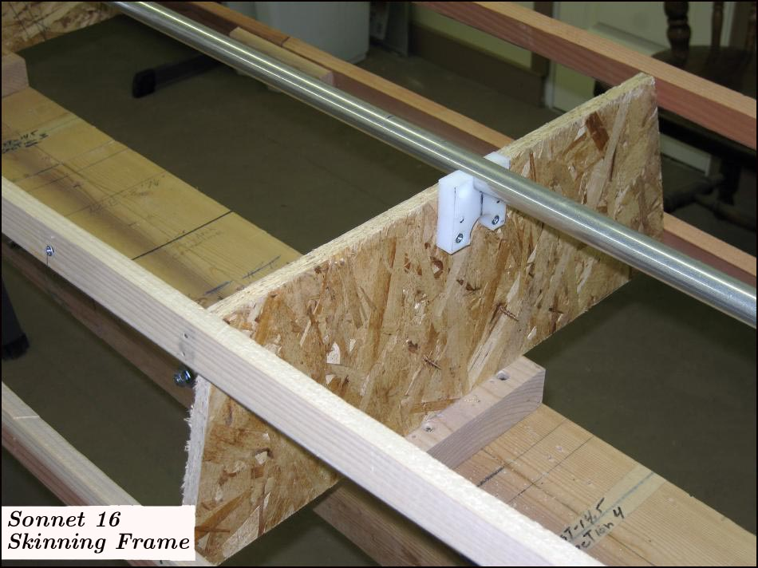

| Sonnet 16 | Menu Last Page Next Page |
|

Details of the skinning frame showing the detachable aluminum keel that will be part of the completed boat . The stations are made from construction OSB and the stringers are redwood. They are attached with finishing nails to the temporary framework. The Sonnet 16 can be built as either a 21"beam or 22.5" beam version, and the Sonnet 14 in either a 22"beam or 23.5" beam version.
|
|